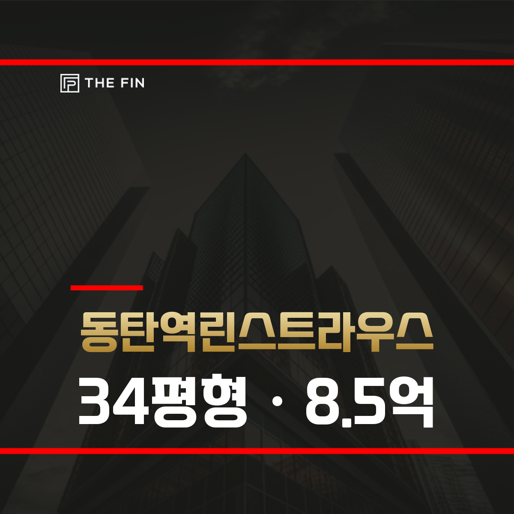
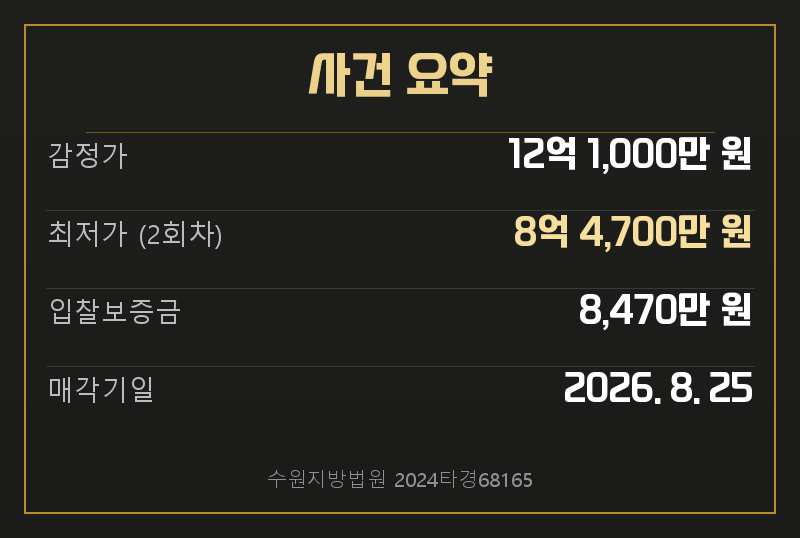
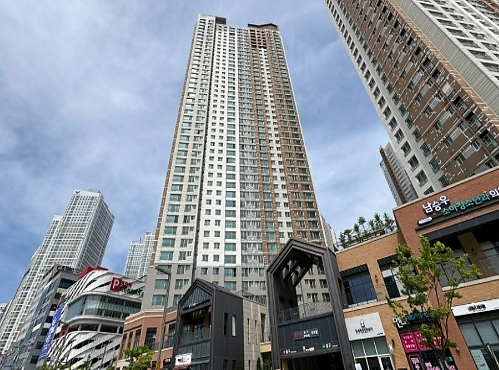
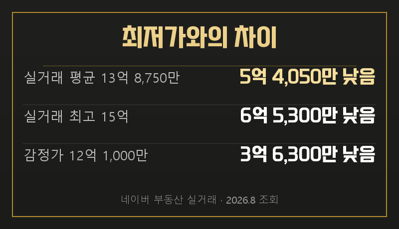
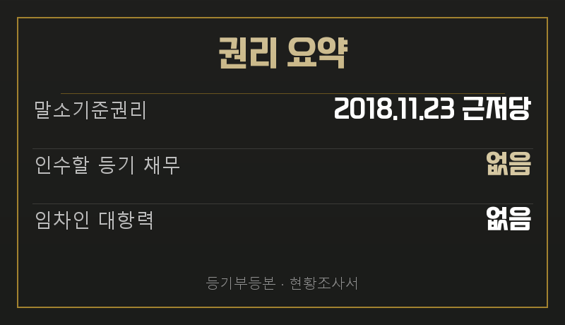
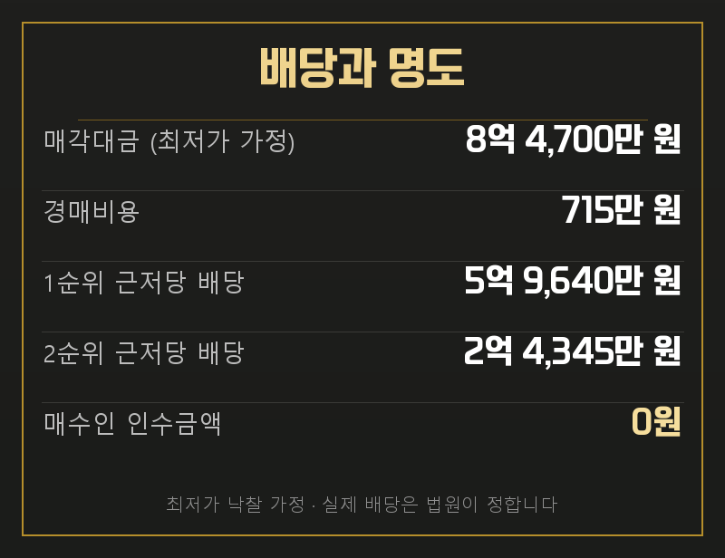
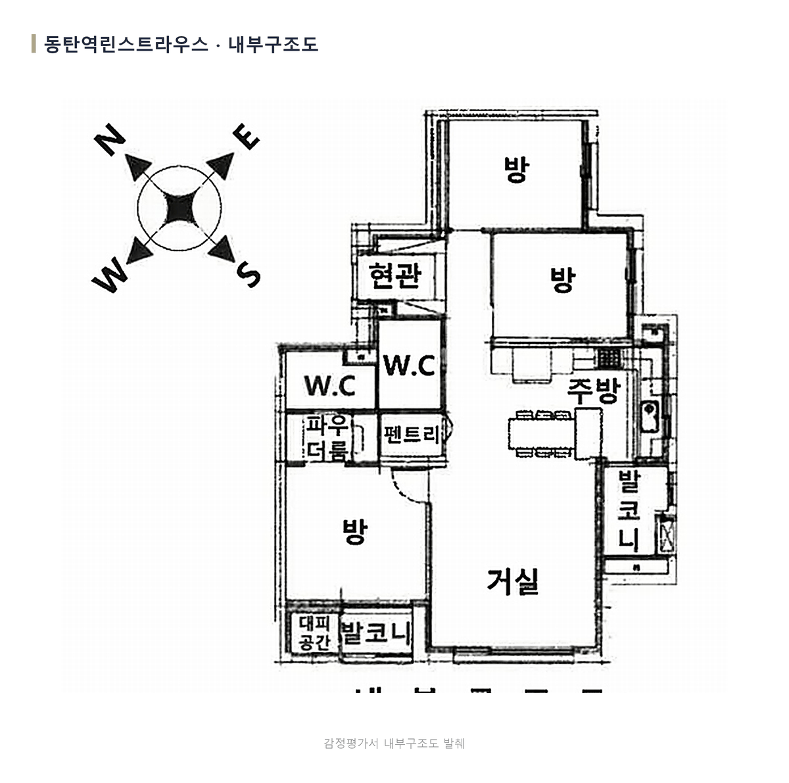
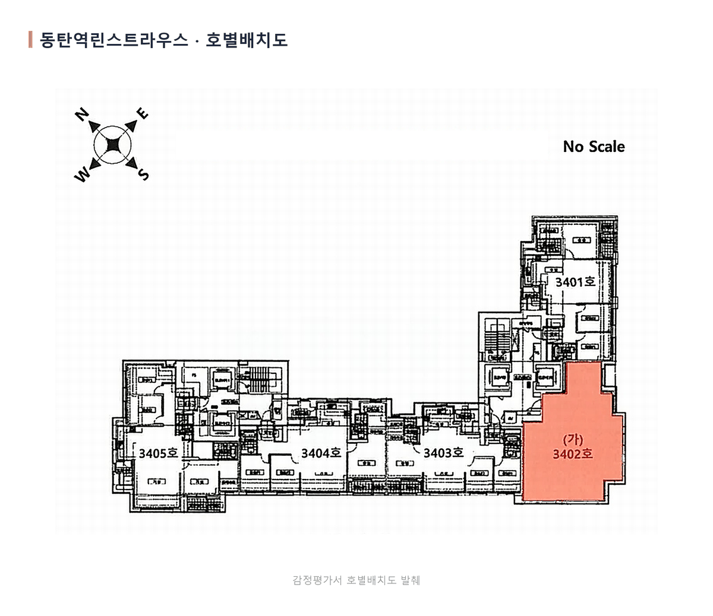
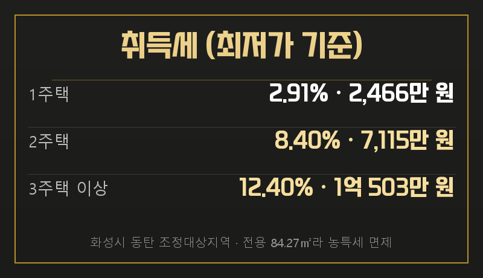

수원지방법원 2024타경68165
동탄역린스트라우스 103동 3402호
전용 84.2656㎡ · 34평형
2회차 최저가 8억 4,700만 원
화성시 오산동 동탄역린스트라우스 103동 3402호가 경매로 나왔습니다. 1차 감정가 12억 1,000만 원에서 한 차례 유찰돼, 지금 보시는 8억 4,700만 원이 2회차 최저가입니다.
전세가율은 39%로 계산됩니다. 임대 비율을 매매가 판단에 섞지 않고, 최근 매매 실거래 네 건의 분포부터 보셔야 합니다.


| 관할 | 수원지방법원 |
|---|---|
| 소재지 | 경기 화성시 오산동 1020 동탄역린스트라우스 103동 3402호 |
| 면적 | 전용 84.2656㎡ · 대지권 28.68㎡ |
| 감정가 | 1,210,000,000원 |
| 최저가 | 847,000,000원 · 감정가의 70% |
| 매각기일 | 2026년 8월 25일 |
같은 평형 매매 실거래는 최근 4개월 4건이고, 13억 원에서 15억 원 사이에 분포합니다. 평균은 13억 8,750만 원이며 가장 최근 계약은 2026년 6월 5일 13억 5,000만 원입니다.
네이버 호가는 15억 5,000만 원부터 등록돼 있습니다. 실거래 네 건은 계약 층이 서로 달라 같은 평형 안에서도 금액대가 갈립니다. 이번 물건이 어느 구간에 해당하는지 동과 층 조건을 함께 보셔야 합니다.

차이 금액이 그대로 수익은 아닙니다.
최저가는 입찰을 시작하는 금액입니다. 판단 기준은 감정가가 아니라 실거래와 호가로 두시되, 취득세·명도비·체납관리비와 경쟁 상황까지 함께 반영하셔야 합니다.
같은 평형 전세 실거래는 5억 원에서 6억 5,000만 원 사이이고, 가장 최근 계약은 2026년 7월 22일 6억 500만 원입니다. 전세 호가는 6억 원부터 올라와 호가 최저가 기준 전세가율은 39%입니다.
월세는 2026년 3월 14일 보증금 1억 5,000만 원에 월 200만 원 조건이 확인되고, 등록 매물은 보증금 2억 원대부터 나와 있습니다. 임대 자료는 보유 기간의 현금흐름을 계산하는 데 쓰고, 매매가격은 앞서 본 거래 분포로 판단하셔야 정확합니다.
2018년 11월 23일 설정된 채권최고액 5억 9,640만 원의 근저당이 말소기준권리입니다. 뒤에 설정된 채권최고액 8억 6,520만 원의 근저당을 포함해 후순위 등기는 매각으로 소멸합니다.

점유 임차인의 전입일은 2022년 7월 18일입니다. 말소기준권리보다 늦어 대항력이 인정되지 않으므로, 임차보증금을 낙찰자가 인수하지 않습니다.
인수 여부와 명도 일정은 다른 문제입니다.
등기에서 넘어오는 채무가 없어도 점유 이전에는 시간이 들 수 있습니다. 입찰 전 전문가와 상담해 소요 기간을 계산에 반영하시기 바랍니다.

최저가로 낙찰되면 경매비용 715만 원을 뺀 8억 3,985만 원이 배당됩니다. 1순위 근저당이 채권최고액 전액인 5억 9,640만 원을 가져가고, 2순위 근저당은 2억 4,345만 원만 배당받아 나머지는 배당되지 않습니다. 대항력 있는 임차인이 없어 매수인이 인수할 금액은 없습니다.
다만 이 표는 최저가에 낙찰된다는 가정이고, 실제 배당은 법원이 정합니다. 낙찰가가 올라가면 배당액도 달라지고, 당해세나 뒤늦게 들어온 압류처럼 지금 자료에 없는 채권이 있으면 순위가 바뀔 수 있습니다.

거실과 주방을 중심으로 방 3개, 욕실 2개가 배치돼 있습니다. 현관 옆 팬트리와 파우더룸이 있고 거실과 방 쪽에 발코니가 이어집니다.

동탄6동 일대는 사업체 약 5,184개, 종사자 약 31,205명으로 직장이 비교적 많은 지역입니다. 배후 직장 수요에 학원가의 교육 수요가 더해져 실거주와 임대 양쪽의 수요 기반이 확인됩니다.
실투입은 낙찰가에 취득세와 명도 비용, 체납관리비를 더해 산정합니다. 취득세는 취득가액과 보유 주택 수, 조정대상지역 여부에 따라 달라지므로 실제 취득가액과 입찰 시점의 정책을 기준으로 확인하셔야 합니다.
실거주 목적이라면 잔금 대출 한도와 입주 시점을, 임대 운용이라면 전세와 월세 중 어느 쪽으로 자금을 회수할지 먼저 정한 뒤 응찰 금액을 계산하시는 순서가 맞습니다.

최저가로 낙찰됐을 때의 취득세입니다. 1주택이면 2,466만 원이지만 2주택이면 7,115만 원, 3주택 이상이면 1억 503만 원으로 뜁니다. 이 물건은 전용 84.27㎡로 85㎡ 이하라 농어촌특별세가 붙지 않습니다.
낙찰가가 최저가보다 높아지면 세액도 함께 올라갑니다. 취득 시점의 보유 주택 수와 정책이 기준이므로, 입찰 전에 본인 보유 현황으로 다시 확인하셔야 합니다.
등기에서 넘어오는 금액이 없는 사건이라, 결국 실거래 13억 원에서 15억 원 사이에서 본건의 동과 층 조건을 얼마나 보수적으로 평가하느냐가 핵심입니다. 매각기일까지 새 거래가 반영될 수 있으니 마지막 확인 시점도 중요합니다.
THE FIN은 2014년부터 경매 현장에 있었고, 법원 매수신청대리인으로 등록된 중개법인입니다. 권리분석·시세조사·입찰 동행·잔금 대출·명도를 단계별 담당자가 함께 진행합니다.
이 물건으로 입찰을 생각하고 계시면 매각기일 전에 연락 주십시오. 최신 거래와 동·층 조건, 세금과 자금 일정을 연결해 이 사건에 맞는 입찰가를 함께 산출해 드립니다.
이이사님이 주신 초안과 이 원고가 어디서 갈렸는지 적어 둡니다. 무엇을 고쳤는지 보시고 피드백 주시면 다음 회차에 반영합니다.
아래는 우리 배관 사정입니다(원고 내용과 무관).
게시 형식으로 옮기면서 근거가 없는 자산과 계산을 넣지 않았습니다.